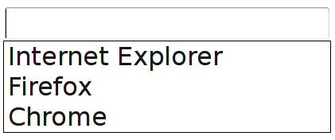

Cross-browser, nové HTML značky
Cross-browser, nové HTML značky
Webová interaktivní prezentace
"?" zobrazí krátkou nápovědu
Tisk jako obvykle
Pro pokračování stiskněte mezerník
Obsah
Webové prohlížeče: každý pes, jiná ves
HTML5 audio a video
Sémantické značky
Nové atributy
Formulářové prvky
Webové prohlížeče
Jméno Verze Renderer JavaScript Poznámka
Mozilla Firefox 27 Gecko Spider Monkey
Google Chrome 32 WebKit/Blink V8
Apple Safari 7 WebKit JSC Existovala verze pro Windows
Microsoft Internet Explorer 11 Trident Chakra Zajímavý až od verze 9
Opera 12/19 Presto/Blink Carakan/V8
Webové prohlížeče: mobilní
Apple Mobile Safari (iOS)
Android Browser (Android)
Opera Mobile (Android, Symbian, Windows Mobile)
Firefox for Android (Android)
Chrome for Android (Android, trošičku iOS)
Internet Explorer Mobile (Windows Mobile)
Webové prohlížeče: zpětná kompatibilita
Nutnost definovat podporovaný feature set
Oříznout starý prohlížeč znamená připravit se o uživatele
Oříznout starý prohlížeč znamená motivovat k upgrade
Časté aktualizace = snazší rozhodování
Webové prohlížeče: co kdo umí
Volitelné nabízení pokročilých technologií
Progressive enhancement: nabízet základní funkcionalitu a volitelně přidávatGraceful degradation: nabízet pokročilou funkcionalitu a v případě nouze couvnout
HTML5 Audio
Vložení zvukového souboru do stránky
Ovládací prvky vyrábí prohlížeč (jsou-li požadovány)
Různé prohlížeče rozumí různým formátům zvukových souborů
Možnost specifikovat více formátů
Možnost zadat alternativní obsah pro nekompatibilní prohlížeče
<audio controls>
<source src="sound.ogg" type="audio/ogg" />
<source src="sound.mp3" type="audio/mpeg" />
<source src="sound.wav" type="audio/wave" />
Smůla :-(
</audio>
HTML5 Audio: JavaScriptové API
new Audio("song.mp3").play();
var a = new Audio();
a.canPlayType("audio/mpeg"); /* "", "maybe", "probably" */
a.src = "song.mp3";
a.addEventListener("timeupdate", function() { console.log(a.currentTime); }, false);
a.play();
Web Audio API
Experimentální JS API
Konstrukce zvukového grafu
Uzly = transformace zvuku
Přístup k právě přehrávaným datům (vizualizace)
Generování zvukového signálu
HTML5 Video
Vložení videa do stránky
Alternativa pro Flashové přehrávače
Syntaxe téměř shodná s audiem
Ještě výraznější problematika formátů
S výhodou použití <source media="..." />
HTML5 Video: ukázka
<video controls poster="image.png">
<source src="video-small.mp4"
type="video/mp4; codecs='avc1.42E01E, mp4a.40.2'"
media="screen and (max-width:500px)"
/>
<source src="video.mp4" type="video/mp4; codecs='avc1.42E01E, mp4a.40.2'" />
<source src="video.ogv" type="video/ogg; codecs='theora, vorbis'"/>
<source src="video.webm" type="video/webm; codecs='vp8, vorbis'" />
<!-- embed flash jako fallback -->
</video>
Nové sémantické HTML značky #1
<section>, <article>sémantické označení částí stránky
<header>, <footer>hlavička a patička (stránky)
<hgroup>sloučení navazujících nadpisů
<nav>označení oblasti s navigací
<aside>doplňkové informace (slovníček, reklama, …)
<figure>, <figcaption>sloučení popisku s obrázkem (či obrázky)
<time datetime="15:00">označení časového údaje
Nové sémantické HTML značky #2
<input type="text" list="browsers" /> <!-- "našeptávání" -->
<datalist id="browsers">
<option value="Internet Explorer" />
<option value="Firefox" />
<option value="Chrome" />
</datalist>

<!-- hodnocení -->
<meter min="0" max="100" low="50" high="90" optimum="100" value="70">dobře</meter>
Nové sémantické HTML značky #3
<progress>...operace probíhá...</progress> <!-- ukazatele postupu -->
<progress value="75" max="100">...skoro hotovo...</progress>
<menu type="toolbar"> <!-- lišta nástrojů -->
<li><menu label="File" /></li>
<li><menu label="Edit">
<button type="button">Copy</button>
<button type="button">Cut</button>
<button type="button">Paste</button>
</menu></li>
<li><menu label="Help" /></li>
</menu>
Nové atributy
<input type="text" placeholder="Hledat" />
Zástupný text
Někdy lze použít polyfill
<a href="#" data-record-id="123">
Atributy začínající na data- lze použít pro vlastní potřebu
Alternativa k držení dat v paměti JS interpretu
Nové atributy – contenteditable
<div contenteditable>ahoj</div>
Obsah prvku lze po kliknutí upravovat
Základní stavební prvek WYSIWYG editorů (nikoliv GDrive)
Manipulace pomocí DOM + Range
Bonus: v takovém prvku lze použít document.execCommand()
Implementace execCommand nekonzistentní, dokumentace
Nové formulářové prvky
<input type="text" autofocus />
<input type="date" min="2011-03-01" max="2011-03-31" value="2011-03-01" />
<input type="range" min="0" max="50" value="25" />
<input type="search" results="10" placeholder="Hledat..." />
<input type="text" pattern="[a-z]+" required />
Podpora v prohlížečích
Validace
<input type="text" pattern="[a-z]{3,}" required title="Uživatelské jméno" />
:required { border: 1px solid red; }
Atribut pattern má smysl jen při atributu required
Regulárnímu výrazu musí odpovídat obsah celého pole
Titulek se použije jako nápověda při nevyplnění
UI je v režii prohlížeče
CSS pseudotřídy :required a :optional
Validace – lokalizace
<input required title="Uživatelské jméno" x-moz-errormessage="Smůla" />
var input = document.querySelector("input");
input.setCustomValidity("Chyba");